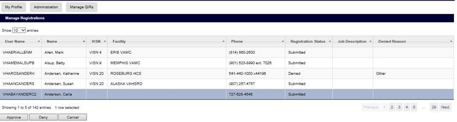
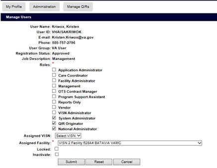
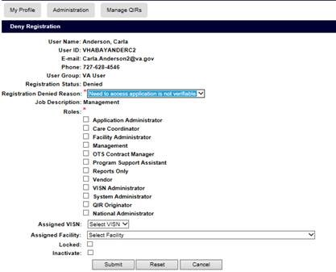
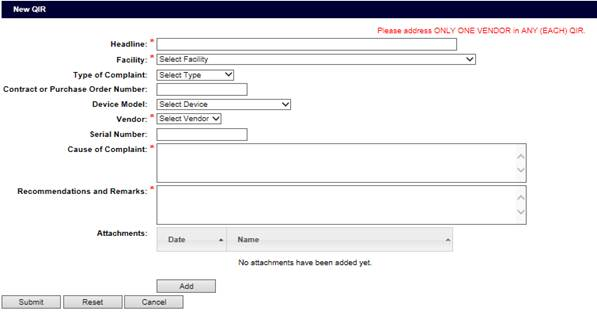
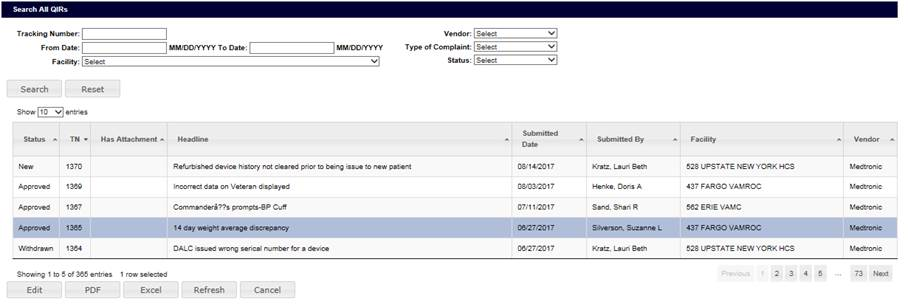
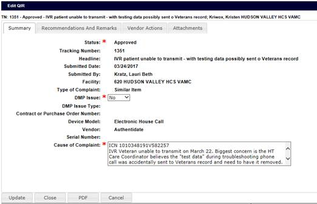

Summary of Qualifications
- Expertise in Object-Oriented Analysis/Design and development.
- Experience with various software development methodologies including Agile and TDD and XP.
- Strong working knowledge of J2EE.
- Experience developing and consuming RESTful web services.
- Solid working knowledge of .NET
- Excellent communication skills.
Programming Skills
- Languages: Java, C#, ASP.NET, SQL, HTML, CSS, JavaScript, Python, NodeJS
- Frameworks: Spring, Spring MVC, Hibernate, Struts, ASP.NET MVC 3, JQuery, Bootstrap, AngularJS, Angular and Ruby On Rails
- Software: Eclipse, Spring Tool Suite, Visual Studio 2008 & 2010, Visual Studio Code, Atom, Maven, IBM Rational Team Concert, Git, SVN
Projects
Manage Registrations
-

Pending Registrations
A user that is authorized to approve or deny a registration will get an alert that they have pending registrations to approve or deny.
From the Administration menu the user will select an Approve Registrations menu item which will then present the user with a table of all pending registrations.
-

Approve Registration
The above form is presented to a user when they have decided to approve a persons registration.
The list of roles that can be assigned are determined by the logged in users own roles. This keeps a user from assigning a role to a pending registration that they themselves are not assigned.
A user of the system can only be assigned to a visn or facility if they have the proper role(s). The dropdowns for these fields are hidden when the assigned role rules for that specific dropdown are not met.
-

Deny Registration
The above form is presented to a user when they have decided to deny a persons registration.
The main difference from the approve form is that the user must select the reason for denying the persons registration.
Quality Improvement
The Quality Improvement module is designed to operate as a workflow system that will allow the VA, and vendors that supply equipment to the VA, to efficiently work together to address issues with equipment or make the equipment more user friendly for veterans.
-

Create New QIR
A user will use the above form to create a new QIR.
-

Search For QIR
When a user has tasks to perform on a QIR that is assigned to them, they will navigate to this form
From here the user can enter search terms to find a specific QIR the search results will appear in the table.
-

Edit QIR
When a user selects the desired QIR from the search form they will be presented with the above form.
The user can then edit any desired fields and then submit the QIR to move to the next step in the QIR workflow.